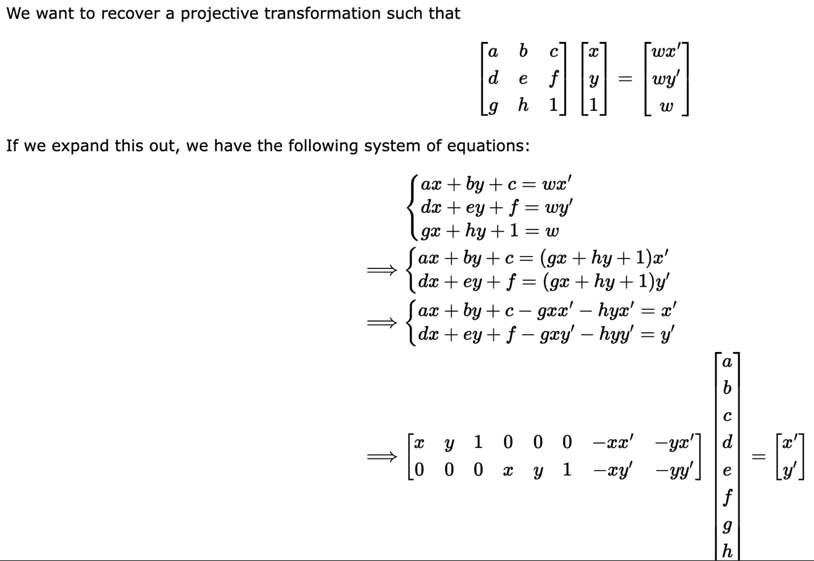

Shoot the Pictures
I shot three pictures of my desk. I ensured to rotate about the camera axis to obtain pictures from different angles. I used pictures from the left, center, and right angles for my warping and mosaics examples below.
Desk Left

Desk Middle
Desk Right
Recover Homographies
To recover the homographies, I followed the equations below, and this basically comprised of my functions.
Warp the Images
To warp the images, I used the homography to forward warp four corners of the original image. I then found all the pixels inside the warped corners and then inverse warped them to map them to the original image. I then used interpolation to map pixels form the original image to the warped image.
Warped Room Left to the frame of Room Center
Image Rectification
For rectification, I supplied correspondances by manually clicking corners for the image as my first set of points. For the second set of points, I just used np.array([[0, 0], [400, 0], [0, 200], [400, 200]]) as my target rectification. I then computed the homography for the two sets of points. Using this homography, I warped the image using the previous step to get our rectification.
Flag
Rectified Flag
Cropped Rectified Flag
Cap
Rectified Cap
Cropped Rectified Cap
Box
Rectified Box
Cropped Rectified Box
Blend the images into a mosaic
To blend images into a mosaic, I first modified the warp function above, to provide the translation of the warped images. Using this translation, I just added the warped images on my scene and translated the next set of images, essentially adding them one-by-one to the mosaic and translating them for alignment. For the translation, I just used the top-corner of each warped image. To blend them, I used an alpha mask based on the distance from the center of an image, to get a nice blend. I then used a weight map to obtain good pixel intensities. I did this by finding the union of pixels between two images that were stitched together and then doing a weighted average on them. This is something that I might work on for 4b to improve the outputs, as it could be the result of not having a good set of pictures for a mosaic.
Mosaic